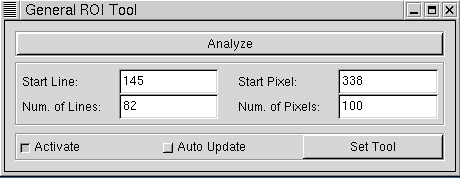
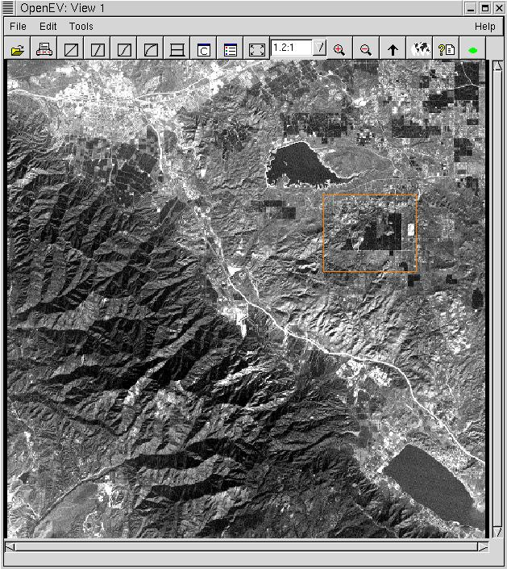
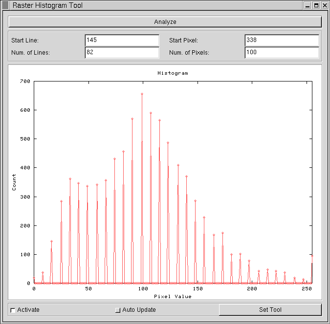

XML configuration files can be used to select which of the available menu and icon entries will be displayed in OpenEV view windows launched by the main application and in the OpenEV python shell, and whether or not the history area and progress bar will be shown in the OpenEV python shell. The names of the menu entries and icon files used can also be altered through the configuration files. The XML configuration files cannot be used to create new callbacks, they can only dictate how those callbacks that are present are referenced.
The functionality of OpenEV can be extended using the Tool_GViewApp class. In the most general case, this class contains only a reference to the current OpenEV (GViewApp) instance and a set of entries to add to the menu and icon bars of the view windows and python shell. Each menu or pymenu entry is defined by a default string describing the menu location (eg. 'Tools/ROI Analysis Tool'), an integer position relative to the existing items within the same menu (eg. 2 would place 'ROI Analysis Tool' after the second entry within the 'Tools' menu), and a callback. The reference to the main application allows the tool to interact with the current views, layers, and edit toolbar. Each icon entry is defined by an iconfile, hint text, default position, callback, help topic (not currently used), and text. All except the callbacks can be customized using XML, though the mechanism is slightly different than for the standard window items because the callback must be located through the information in the XML file since the tool's callback code isn't part of the gvviewwindow class.
class Tool_GViewApp:
# Abstract base class to derive tools from
def __init__(self,app=None):
self.app = app
self.menu_entries = Tool_GViewAppMenuEntries()
self.icon_entries = Tool_GViewAppIconEntries()
self.pymenu_entries = Tool_GViewAppMenuEntries()
self.pyicon_entries = Tool_GViewAppIconEntries()
Menu entry information is stored in a dictionary, with the
entry path as the key and the position and callback as
a tuple for the value.
class Tool_GViewAppMenuEntries:
# Class to store entries to be added to openev's menu
def __init__(self):
self.entries = {}
def set_entry(self,item,position=0,callback=None,accelerator=None):
# item = a string describing menu location
# position = default location in the menu (integer): Ignored if an
# xml menu entry is specified for the tool. Note:
# when used, the position refers to position in the
# lowest level menu. Eg. if a menu entry is
# 'File/menu1/entryN', position refer's to entryN's
# position within menu1, not menu1's position in
# File. For more flexibility, use the xml form of
# configuration.
# callback = callback
# accelerator = shortcut key
if (type(item) == type('')):
if (type(position) == type(0)):
self.entries[item] = (position,callback, accelerator)
else:
raise AttributeError,"position should be an integer"
else:
raise AttributeError,"Menu entry item must be a string"
Icon entry information is stored as a list, with each
item in the list containing icon file, hint, position,
callback, and help topic information. The icon files
must be specified by a full path unless they are
located in OpenEV's tools or pics directory, in which
case the basename alone can be specified.
class Tool_GViewAppIconEntries:
# Class to store entries to be added to openev's menu
def __init__(self):
self.entries = []
def set_entry(self,iconfile,hint_text,position=0,callback=None,help_topic=None,label=None,icontype='xpm'):
# iconfile=icon filename (xpm case), or some other string not yet defined
# (pixmap/widget case- not yet supported- may never be)
# hint_text=tooltip text to use
# position = default location in the icon bar (integer)
# callback = callback
# help topic = html help file (not yet used by anything)
# label = some gtk think- not sure what this does
# icontype = 'xpm' (later may allow 'pixmap' or 'widget', but not yet)
if (type(iconfile) == type('')):
import os
if os.path.isfile(iconfile):
fullfilename=iconfile
elif os.path.isfile(os.path.join(gview.home_dir,'tools',iconfile)):
fullfilename=os.path.join(gview.home_dir,'tools',iconfile)
elif os.path.isfile(os.path.join(gview.home_dir,'pics',iconfile)):
fullfilename=os.path.join(gview.home_dir,'pics',iconfile)
else:
txt = "Cannot find file "+iconfile+'. Either the full\n'
txt = txt+"path must be specified, or "+iconfile+ " must be\n"
txt = txt+"placed in the tools or pics directory."
raise AttributeError,txt
# On nt, path separators need to be trapped and doubled to avoid
# being interpreted as an escape before special characters.
if os.name == 'nt':
import string
fullfilename=string.replace(fullfilename,"\\","\\\\")
if (type(position) == type(0)):
self.entries.append((fullfilename,label,hint_text,position,callback,help_topic,icontype))
else:
raise AttributeError,"position should be an integer"
else:
txt = "Cannot find file "+iconfile+'. Either the full\n'
txt = txt+"path must be specified, or "+iconfile+ " must be\n"
txt = txt+"placed in the tools or pics directory."
raise AttributeError,txt


In its initialization function, the GeneralROITool:

MODULE_NAME = toolexample TOOL_NAME=GeneralROITool TOOL_NAME=GeneralPOIToolwill result in OpenEV loading the GeneralROITool and GeneralPOITool tools from toolexample.py. Note that the PYTHONPATH variable must include toolexample.py's directory for this to work.
OpenEV modules should be placed in the tools/ subdirectory to be loaded automatically.
We will write a simple GUI module to automate the Fast Fourier Transform task. As a first attempt we make a menu item to perform an FFT.
# OpenEV module fft.py
from gtk import *
import gview
import GtkExtra
import gviewapp
import gdalnumeric
import FFT
class FFTTool(gviewapp.Tool_GViewApp):
def __init__(self,app=None):
gviewapp.Tool_GViewApp.__init__(self,app)
self.init_menu()
def init_menu(self):
self.menu_entries.set_entry("Image processing/FFT",2,self.calculate_fft)
def calculate_fft(self,*args):
layer = gview.app.sel_manager.get_active_layer()
ds = layer.get_parent().get_dataset()
data = gdalnumeric.DatasetReadAsArray(ds)
data_tr = FFT.fft2d(data)
array_name = gdalnumeric.GetArrayFilename(data_tr)
gview.app.file_open_by_name(array_name)
TOOL_LIST = ['FFTTool']
This module adds a new top level menu "Image processing" with single item
"FFT". Save this text into file, place it into tools/ and restart
OpenEV. Load an image, and click on the new menu item. The transformed image
appears as a new layer (you may need click on the "Fit All Layers" button to see
it).Note, that you can easily extend the functionality of OpenEV with this approach. You can write scripts for your most often performed tasks (like calibration or NDVI calculation, described in the python shell section) and place them on the menu or taskbar.
Ok, our simplest script works, but now we will go further and make a dialog box to allow the user to select what type of transformation (forward or inverse) we should perform and where to place the results (in new layer of the same view or create a new view and place results there).
# OpenEV module fft2.py
from gtk import *
import gview
import GtkExtra
import gviewapp
import gdalnumeric
import FFT
class FFT2Tool(gviewapp.Tool_GViewApp):
def __init__(self,app=None):
gviewapp.Tool_GViewApp.__init__(self,app)
self.init_menu()
def launch_dialog(self,*args):
self.win = FFTDialog()
self.win.show()
def init_menu(self):
self.menu_entries.set_entry("Image processing/FFT2",2,self.launch_dialog)
class FFTDialog(GtkWindow):
def __init__(self,app=None):
GtkWindow.__init__(self)
self.set_title('Fast Fourier Transform')
self.create_gui()
self.show()
def show(self):
GtkWindow.show_all(self)
def close(self, *args):
self.destroy()
def create_gui(self):
self.box1 = GtkVBox(spacing = 10)
self.box1.set_border_width(10)
self.add(self.box1)
self.box1.show()
self.switch_forward = GtkRadioButton(None, "Forward")
self.box1.pack_start(self.switch_forward)
self.switch_forward.show()
self.switch_inverse = GtkRadioButton(self.switch_forward, "Inverse")
self.box1.pack_start(self.switch_inverse)
self.switch_inverse.show()
self.separator = GtkHSeparator()
self.box1.pack_start(self.separator, expand=FALSE)
self.switch_new_view = GtkCheckButton("Create new view")
self.box1.pack_start(self.switch_new_view)
self.switch_new_view.show()
self.separator = GtkHSeparator()
self.box1.pack_start(self.separator, expand=FALSE)
self.box2 = GtkHBox(spacing=10)
self.box1.pack_start(self.box2, expand=FALSE)
self.box2.show()
self.execute_btn = GtkButton("Ok")
self.execute_btn.connect("clicked", self.execute_cb)
self.box2.pack_start(self.execute_btn)
self.execute_btn.set_flags(CAN_DEFAULT)
self.execute_btn.grab_default()
self.close_btn = GtkButton("Cancel")
self.close_btn.connect("clicked", self.close)
self.box2.pack_start(self.close_btn)
def execute_cb( self, *args ):
layer = gview.app.sel_manager.get_active_layer()
ds = layer.get_parent().get_dataset()
data = gdalnumeric.DatasetReadAsArray(ds)
if self.switch_forward.get_active():
data_tr = FFT.fft2d(data)
else:
data_tr = FFT.inverse_fft2d(data)
array_name = gdalnumeric.GetArrayFilename(data_tr)
if self.switch_new_view.get_active():
gview.app.new_view()
gview.app.file_open_by_name(array_name)
else:
gview.app.file_open_by_name(array_name)
TOOL_LIST = ['FFT2Tool']
As you can see, the most laborious part of the work is creating GUI
controls.
The <entry> items below are used to indicate the locations of standard view window entries- ie. those that have callbacks defined in gvviewwindow.py. The <path> part of the entry indicates how the entry will show up in the menu; <callback> indicates which gvviewwindow callback to use. The 'File/rfl1' entry demonstrates how a simple argument (int or string) can be passed to the callback.
The <tools>, <simpletoolentry>, and <complextoolentry> items are used to define which tools' menu and icon entries will show up, and to customize their appearance. If no tool entries will be specified, all currently loaded tools will be shown. If a tool is indicated in the file but is not loaded, an error will occur. The <tools> entry, if present, must contain one of the strings All, None, or Some. If <tools> is All, all currently loaded tools will have entries in the view menu. If <tools> is None, no tool entries will be loaded in the view menu, and an error will occur if <simpletoolentry> or <complextoolentry> items occur later in the XML file. If <tools> is Some, only entries specified through <simpletoolentry> or <complextoolentry> items will show up.
The <simpletoolentry> item is used to put in tool entries using their Menu paths. The position of the menu entry will be determined by the entry's position in the XML file. For instance, GDALTool (the Export tool- Tool_Export.py) defines a menu entry "File/Export". In the case below, its entry would show up between "Import" and "Print" in the "File" menu.
The <complextoolentry> item is used to redefine the path names, and to select among entries to show in cases where a tool defines more than one menu entry. Each <complextoolentry> must define the tool, the old menu path (tool default) corresponding to the callback to be used, and a new menu path. The old menu path is used as a key to the tool's menu_entries dictionary to locate the desired callback. For instance, the <complextoolentry> item below indicates that the callback from RenderTestTool that corresponds to its "Render Test" entry under the "Tools" menu should appear in this view as a "Render Test" entry under the "File" menu, between the "Print" and separator items. If RenderTestTool specified other menu entries, they would have to appear as separate <complextoolentry> items in order to appear in the view menu.
<GViewAppMenu>
<Menu>
<tools>All</tools>
<entry>
<path>'File/Import'</path>
<callback>self.file_import_cb</callback>
</entry>
<simpletoolentry>
<name>GDALTool</name>
</simpletoolentry>
<entry>
...
<path>'File/Print'</path>
<callback>self.print_cb</callback>
</entry>
<complextoolentry>
<name>RenderTestTool</name>
<oldpath>'Tools/Render Test'</oldpath>
<newpath>'File/Render Test'</newpath>
</complextoolentry>
<entry>
<path type="separator">'File/'</path>
</entry>
<entry>
<path>'File/rfl1'</path>
<callback>self.rfl_cb</callback>
<arguments>
<arg>1</arg>
</arguments>
</entry>
...
</Menu>
</GViewAppMenu>
In the icon bar XML file, the entry parameters defined are the file to use
for the icon (<xpm>), the tooltip text (<hint>), and the
callback. Position in the icon bar is determined by an entry's position
in the file.As in the menu bar XML file, the tool entries are specified using the <tool>, <simpletoolentry>, and <complextoolentry> items. Tool icon entries are stored internally as a list rather than a dictionary in case an application wishes to use the same icon file twice with different tooltip text to differentiate between callbacks, so an index is used to specify which of a tool's icon entries to use. The <complextoolentry> item can be used to override the icon file, hint, help (not currently used by OpenEV for icons) and position of an item.
An example of an XML icon file for view windows is given below (... indicates where sections have been removed for brevity):
<GViewAppIconBar>
<Iconbar>
<icon>
<xpm>'openfile.xpm'</xpm>
<hint>'Open and Display Raster/Vector File'</hint>
<callback>self.file_open_cb</callback>
</icon>
<icon>
<xpm>'print.xpm'</xpm>
<hint>'Print Current View'</hint>
<callback>self.print_cb</callback>
<help>'gvprint.html'</help>
</icon>
...
<complextoolentry>
<name>ShapesGridTool</name>
<hint>Newhint</hint>
<index>0</index>
</complextoolentry>
...
</Iconbar>
</GViewAppIconBar>
The python shell menu and icons entries are combined together
in a single file that also indicates other options in the pyshell layout, such
as whether a history area and progress bar are present. The menu and icon
specifications are analogous to the view menu and icon specifications. The message
area and prompt will always be present. An example of a python shell XML configuration
file is given below:
<GViewAppPyshell>
<Menu>
<tools>All</tools>
<entry>
<path>'File/Preferences'</path>
<callback>self.preferences_cb</callback>
</entry>
<entry>
<path>'File/Quit'</path>
<callback>self.close_cb</callback>
<accelerator>control+D</accelerator>
</entry>
<entry>
<path>'Help/Help'</path>
<callback>self.launch_help_cb</callback>
</entry>
</Menu>
<Iconbar>
<tools>Some</tools>
<complextoolentry>
<name>MyTool</name>
<hint>MyToolHint</hint>
<index>0</index>
</complextoolentry>
</Iconbar>
<History>
</History>
<Progress>
</Progress>
</GViewAppPyshell>
In the case above, an empty entry (eg. <History> </History>)
indicates that the entry should be present with the default settings.
If an entry is not present (eg. the whole <Menu>...</Menu>
entry was removed), that component will not be present. If the component is
present, only the subentries
specified will be used. The file above specifies a python shell with
a menu with all tool menu entries, plus entries for the help callback
(Help-> Help), a quit entry (File-> Quit), and an entry for specifying
paths to search for python modules (File-> Preferences).
The iconbar would contain only a single
entry- the first icon entry specified in tool MyTool, with its hint text
replaced by MyToolHint. The history bar and progress bar would be
present with their default settings (currently there are no options
to alter in these- they are either present or not present).
The progress bar is not used automatically even if it is present, though
functions that are going to take a long time can update it by
importing gview and placing the following line inside the function
wherever they want the progress bar to update:
gview.app.shell.show_progress(i,msg)
where i is a number between 0 and 100 (the amount of progress to show in the bar), and msg is a string to display in the message section.